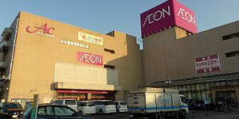
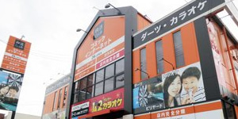

About 10 minutes by car from JR Takamatsu Station.
Go along Seto-Ohashi road (Hamakaido). Turn left at the corner of Sansyusoko Headquarter (讃州倉庫(株)本社) facing the Tsumeta River, please continue until you see a building with the blue logo of Kotobus on your right.
About 15 minutes by car from "Takamatsu Chuo IC
From the Takamatsu Chuo IC, head for the “Jumbo Ferry Takamatsu Stop” (bound for Kobe), head north, and cross Seto-Ohashi road (Hamakaido), please continue until you see a building with the blue logo of Kotobus on your right.
Kotobus Takamatsu has ample parking space. Please use it if needed.
Parking fee
Free parking is available for those using Kotobus service.
※ Please note that the parking lot might be full during busy times.
Attractions nearby Kotobus Takamatsu
Kanro Cafe Gallery
A cozy unique cafe
Location: Kuboike Building, 3-3-15 Fukuokacho, Takamatsu City, Kagawa Prefecture
Business hours: 8:00-18:00
Phone: 087-822-0930
Holiday: Saturday

Aeon Takamatsu Higashi Store
Aeon Takamatsu Higashi Store is a shopping center operated by Aeon Retail. There is also a movie theater. Every Wednesday is "Thanks Day", and the tickets for all movies on this day are ¥ 1,100.
Location: 3-8-5, Fukuokacho, Takamatsu City, Kagawa Prefecture
Business hours: 9:00 - 22:00
Phone: 087-826-4111

快活 CLUB Takamatsu Fukuoka
Comic and Internet cafe boasting the No. 1 store in Japan, opens 24 hours a day. Free parking is also available.
Location: 3-5-2 Fukuokacho, Takamatsu City, Kagawa Prefecture
Business hours: 24 hours
Phone: 087-811-0588